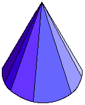
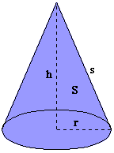

Cone : A cone is a surface generated by a family of
all lines through a given point (the vertex) and passing through a curve in a
plane (the directrix).
More commonly, a cone includes the solid enclosed by a cone and the plane of the
directrix. The region of the plane enclosed by the directrix is called a base of
the cone.
The perpendicular distance from the vertex to the plane of the base is the
height of the cone.
Height: h
Area of base: B
Volume: V
V = hB/3
Circular Cone: A cone whose base is a circle. The line connecting the center of the base to the vertex is called the axis of the circular cone.

Right Circular Cone: In a right circular cone, the axis is perpendicular to the base. (If the axis of a circular cone is not perpendicular to the base, it is called an oblique circular cone.

The length of any line segment connecting the vertex to the directrix is
called the slant height of the cone.
Height: h
Radius of base: r
Slant height: s
Lateral surface area: S
Total surface area: T
Volume: V
B = Pi r2
s = sqrt[r2+h2]
S = Pi rs
T = Pi r(r+s)
V = Pi r2h/3
Frustum of a Right Circular Cone: The part of a right circular cone between the base and a plane parallel to the base whose distance from the base is less than the height of the cone.
Height: h
Radius of bases: r, R
Slant height: s
Lateral surface area: S
Total surface area: T
Volume: V
s = sqrt([R-r]2+h2)
S = Pi(r+R)s
T = Pi(r[r+s]+R[R+s])
V = Pi(R2+rR+r2)h/3